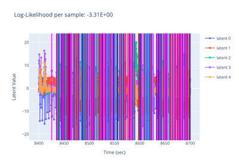

Learning and Inference for Neural Latents

Learning and inference of latents with simple simulated data
Learning and inference of latents with simple simulated data

Learning and inference of latents with MC_MAZE_SMALL data
Learning and inference of latents with MC_MAZE_SMALL data

Learning and inference of latents from striatal recordings while a mouse performed a learned poking sequence